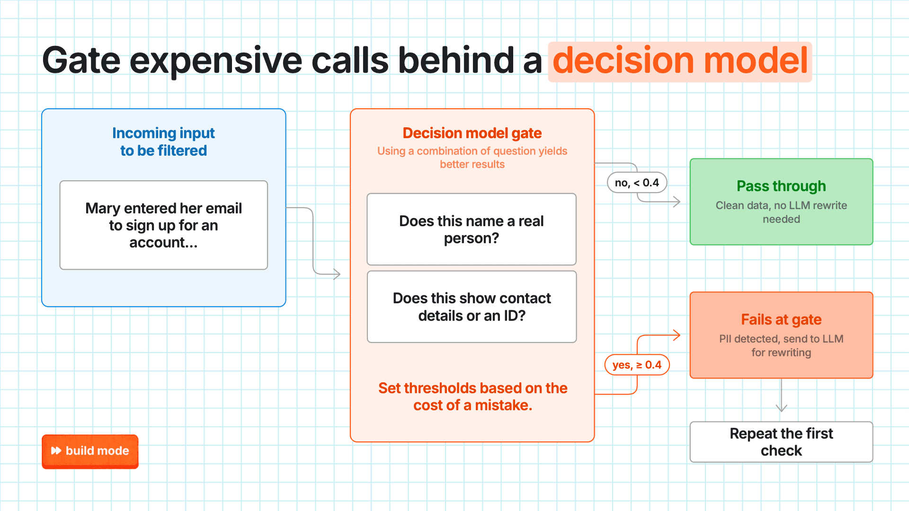
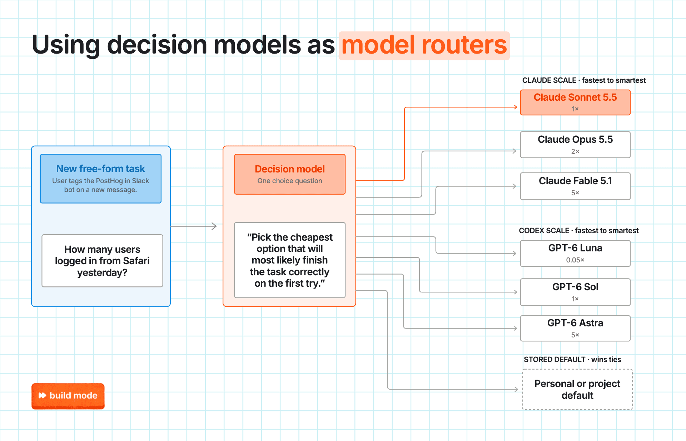
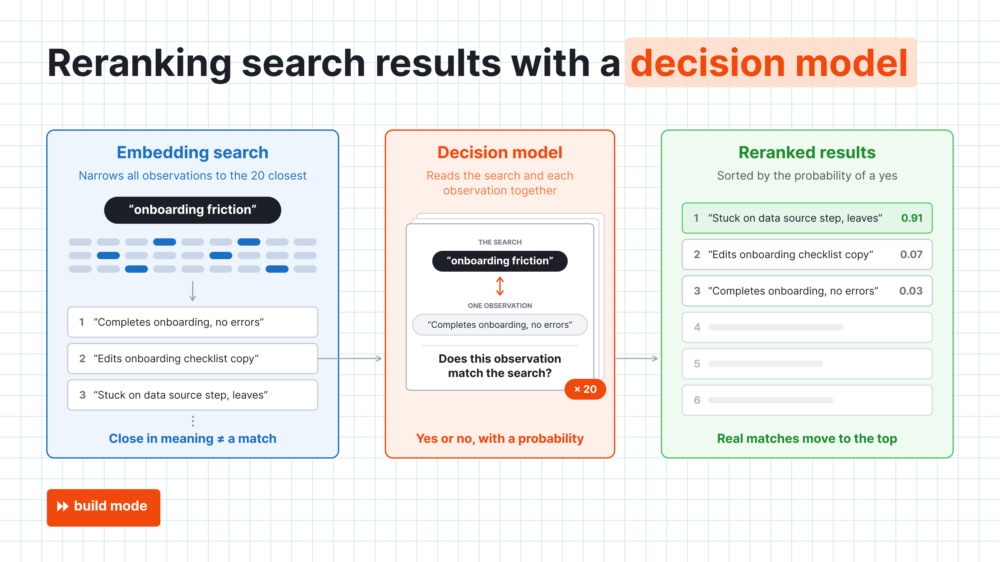

Không phải lúc nào cũng cần LLM
Bản gốc là bài “Not everything needs an LLM” của Jina Yoon trên newsletter build mode của PostHog, đồng thời đăng dạng X Article “How we use decision models”. Ngày 19/11/2026 (01:18 ngày 20/11/2026, UTC+7), tài khoản PostHog (@posthog) đăng chuỗi bài tóm tắt kèm hình. Bản dịch phục vụ học tập phi thương mại; mọi quyền đối với bài gốc và hình minh họa thuộc về tác giả và PostHog. Ghi công không đồng nghĩa với giấy phép tái sử dụng. Hình minh họa được tải về lưu cùng bài, không hotlink. Trên blog này đã có bài liên quan “Đừng gọi đó là mô hình ra quyết định” của TypeSafe.

TL;DR
- Mô hình ra quyết định như Jev trả lời có kiểu, kèm xác suất. Nếu đã hiệu chỉnh, điểm 0.8 nghĩa là đúng khoảng 80% lần; 0.5 thì như tung đồng xu. LLM thì trả lời thành đoạn văn, thường tự tin thái quá.
- Dùng chúng để chặn lời gọi LLM đắt: Replay Vision hỏi hai câu yes/no hẹp (“có nêu tên người thật không?”, “có hiện chi tiết liên hệ hoặc giấy tờ không?”). Nếu một trong hai câu đạt từ 0.4 trở lên thì Gemini viết lại; nếu không thì cho qua. Trên production, 98.7% bản tóm tắt bỏ qua hoàn toàn lời gọi LLM.
- Đặt ngưỡng theo lỗi nào đắt hơn. Với PII, bỏ sót (lưu dữ liệu cá nhân như thể đã sạch) đắt hơn gọi thêm một lần LLM, nên ngưỡng thấp 0.4. Bot Slack dùng 0.85+ trên hai lần kiểm tra vì trả lời khi không được hỏi còn phiền hơn.
- Dùng một câu hỏi
choiceđể chọn mô hình rẻ nhất có khả năng làm đúng ngay lần đầu. Ngưỡng không chuyển được giữa việc, mô hình, nhà cung cấp, thậm chí giữa v1 và v2 của cùng một mô hình; hãy để cấu hình được theo từng dự án và hiệu chỉnh lại khi chạy bóng trên dữ liệu gắn nhãn thủ công. - Chỉ hỏi những gì đang hiện ra trước mặt. Việc xếp hạng “onboarding friction” được làm thành hai bước: embedding lấy danh sách gần, rồi mô hình hỏi “bản tóm tắt này có khớp tìm kiếm không?”. Trên 20 truy vấn thử, chất lượng xếp hạng tăng khoảng 25%.
- Đừng xâu nhiều bước suy luận: job Highlights từng gửi tới 32 phiên, 12–38k token mỗi lần, làm tắc máy chủ mô hình hàng giờ. Việc mở, cần ngữ cảnh dài hoặc nhiều bước thì vẫn để LLM, hoặc mô hình lai như Jeeves (mặc định của PostHog khi không chỉ định mô hình).
Cách đọc: Ở chế độ Song ngữ, rê chuột lên từng đoạn để xem tiếng Việt bên dưới. Trên điện thoại, chạm đoạn để mở/đóng bản dịch; chạm liên kết vẫn mở liên kết. Dùng phím Tab để xem bản dịch, Esc để đóng. Nút nổi góc dưới bên trái chuyển sang Toàn bộ tiếng Việt và ghi nhớ lựa chọn. Khi tắt JavaScript, cả hai ngôn ngữ được hiển thị.
Bài gốc và bản dịch
LLMs love to yap. Ask a simple question and you get a few hundred words of “it depends.” It’s annoying as hell.
LLM rất thích nói dài. Hỏi một câu đơn giản thì nhận về vài trăm chữ “tùy trường hợp”. Đúng là mệt.
This is why we love decision models like Jev for simpler tasks. You ask a structured question and get a typed answer with a probability, which looks something like this:
Đó là lý do chúng tôi thích dùng mô hình ra quyết định như Jev cho những việc đơn giản hơn. Bạn đặt một câu hỏi có cấu trúc và nhận về câu trả lời có kiểu, kèm xác suất, đại khái như thế này:
- Noul. Are hedgehogs mammals? → Yes, 0.99
- Choice. Which animal family do hedgehogs belong to? → Mammal, 0.99
- Score. What is the current conservation status of hedgehogs? → Least Concern, 0.77
- Noul. Nhím có phải động vật có vú không? → Có, 0.99
- Choice. Nhím thuộc họ động vật nào? → Động vật có vú, 0.99
- Score. Tình trạng bảo tồn hiện nay của nhím là gì? → Ít lo ngại, 0.77
Whereas LLMs return free-form and overly confident prose, decision models make model uncertainty explicit. In a calibrated model, answers that score 0.8 are right about 80% of the time. That means a score of 0.5 is a coin flip.
LLM trả về đoạn văn tự do và thường tự tin thái quá, còn mô hình ra quyết định thì nói thẳng mức không chắc của mình. Với mô hình đã hiệu chỉnh, câu trả lời đạt 0.8 thì đúng khoảng 80% lần. Điểm 0.5 nghĩa là như tung đồng xu.
We’ve been experimenting with them at PostHog and several use cases have made it to production. This is everything we’ve learned about using decision models so far: when to use them, how to use them, and mistakes to avoid.
Chúng tôi đã thử nghiệm chúng tại PostHog và một số trường hợp đã vào production. Đây là tất cả những gì chúng tôi học được về việc dùng mô hình ra quyết định cho tới nay: khi nào nên dùng, dùng thế nào, và những sai lầm cần tránh.
1. Use them to gate expensive LLM calls
1. Dùng chúng để chặn lời gọi LLM đắt
Decision models are up to 444.6x cheaper and 193.6x faster than frontier models,1 so you can use them to check whether you even need to make an expensive LLM call at all.
Mô hình ra quyết định rẻ hơn tới 444.6 lần và nhanh hơn tới 193.6 lần so với mô hình frontier,1 nên bạn có thể dùng chúng để kiểm tra xem liệu có cần gọi LLM đắt hay không.
We do this in a pipeline that scrubs personal info in Replay Vision, our product that watches and summarizes user session recordings for you. Here’s how it works:
Chúng tôi làm vậy trong một pipeline làm sạch thông tin cá nhân ở Replay Vision, sản phẩm xem và tóm tắt bản ghi phiên của người dùng. Cách hoạt động như sau:
- Each session summary goes through 2 yes/no questions from a decision model. Using narrow questions like this cuts false flags to about a tenth of what a single question produced. “Does this name a real person?” “Does this show contact details or an ID?”
- If either scores 0.4 or above, Gemini rewrites the summary without the personal info and it gets checked again.
- Otherwise, it’s clean and passes through the gate. In production, 98.7% skip the LLM call entirely.
- Mỗi bản tóm tắt phiên đi qua 2 câu hỏi có/không của một mô hình ra quyết định. Đặt câu hỏi hẹp như vậy giúp giảm cảnh báo nhầm xuống khoảng một phần mười so với khi chỉ hỏi một câu. “Bản này có nêu tên một người thật không?” “Bản này có hiện chi tiết liên hệ hoặc giấy tờ tùy thân không?”
- Nếu một trong hai câu đạt từ 0.4 trở lên, Gemini viết lại bản tóm tắt, bỏ thông tin cá nhân, rồi bản đó được kiểm tra lại.
- Nếu không, bản tóm tắt được coi là sạch và đi qua cổng. Trên production, 98.7% bỏ qua hoàn toàn lời gọi LLM.

Without the decision model, we’d have to keep fussing with prompts and regexes that miss things, or sending every summary to Gemini to catch the 1% that need it.
Nếu không có mô hình ra quyết định, chúng tôi sẽ phải cứ chỉnh đi chỉnh lại prompt và regex rồi vẫn sót, hoặc gửi mọi bản tóm tắt cho Gemini chỉ để bắt được khoảng 1% bản thực sự cần xử lý.
But remember they make mistakes
Nhưng hãy nhớ là chúng vẫn sai
A probability score of 0.85 still means ~150 wrong answers per 1,000 checks, so plan ahead for false positives and false negatives.
Điểm xác suất 0.85 vẫn nghĩa là khoảng 150 câu sai trên 1.000 lần kiểm tra, nên hãy tính trước cả dương tính giả và âm tính giả.
In the PII example, a false positive only costs us an extra LLM call, whereas a false negative stores personal data as clean. That’s why we set the threshold low at 0.4.
Trong ví dụ PII, dương tính giả chỉ tốn thêm một lời gọi LLM, còn âm tính giả thì lưu dữ liệu cá nhân như thể đã sạch. Vì thế chúng tôi đặt ngưỡng thấp, ở 0.4.
When false positives are the costlier mistake, use higher thresholds. For example, we recently updated the PostHog in Slack bot, so it can answer questions without being tagged. To avoid being annoying, it checks every message in a channel to see (1) whether it’s asking for information, and (2) whether PostHog could answer it. Only messages that pass both at 0.85+ go through.
Khi dương tính giả mới là lỗi đắt hơn, hãy dùng ngưỡng cao hơn. Ví dụ, chúng tôi mới cập nhật bot PostHog trên Slack để nó trả lời câu hỏi mà không cần bị gắn thẻ. Để khỏi làm phiền, bot kiểm tra mọi tin trong kênh xem (1) tin đó có đang hỏi thông tin không, và (2) PostHog có thể trả lời được không. Chỉ những tin vượt cả hai mức 0.85 trở lên mới được đi tiếp.
Takeaway: Use decision models to filter jobs before they hit an expensive LLM call, and set the threshold based on which mistake costs you more.Điểm rút ra: Dùng mô hình ra quyết định để lọc việc trước khi chúng chạm tới một lời gọi LLM đắt, và đặt ngưỡng dựa trên lỗi nào làm bạn tốn hơn.2. Use them as model routers
2. Dùng chúng làm bộ định tuyến mô hình
Our PostHog in Slack bot also uses a decision model as a model router.
Bot PostHog trên Slack cũng dùng một mô hình ra quyết định làm bộ định tuyến mô hình.
When the bot gets tagged, it first checks whether the message asked for a specific model. If not, one choice question picks from the list:
Khi bot được gắn thẻ, nó kiểm tra trước xem tin nhắn có yêu cầu một mô hình cụ thể không. Nếu không, một câu hỏi choice sẽ chọn từ danh sách:
Pick the cheapest option that will most likely finish the task correctly on the first try. A failed run costs more than a smarter option.Hãy chọn phương án rẻ nhất mà nhiều khả năng sẽ làm xong việc đúng ngay lần đầu. Một lần chạy thất bại tốn hơn một lựa chọn thông minh hơn.Each option in the list carries a short note on what that model is good for. GPT Luna is described as “a light and very cheap model. Good for short answers, lookups, summaries and very small edits.” The decision model then scores the request against each option’s text.
Mỗi lựa chọn trong danh sách kèm một ghi chú ngắn về việc mô hình đó giỏi gì. GPT Luna được mô tả là “một mô hình nhẹ và rất rẻ. Phù hợp câu trả lời ngắn, tra cứu, tóm tắt và sửa rất nhỏ.” Mô hình ra quyết định sau đó chấm yêu cầu đối với phần mô tả của từng lựa chọn.

But don’t assume they’re interchangeable
Đừng cho rằng chúng thay thế được lẫn nhau
Different tasks, models, and providers all have different thresholds.
Từng việc, từng mô hình và từng nhà cung cấp đều có ngưỡng khác nhau.
We were experimenting with using them to auto-merge similar logs in Error Tracking and found that thresholds changed between v1 and v2 of the same model. We had to make its thresholds configurable per PostHog project and keep the judge in shadow mode while recalibrating based on hand-labeled data.
Khi thử dùng chúng để tự gộp các log giống nhau trong Error Tracking, chúng tôi thấy ngưỡng thay đổi giữa v1 và v2 của cùng một mô hình. Chúng tôi phải cho phép cấu hình ngưỡng theo từng dự án PostHog, và giữ bộ phán xét chạy bóng (chạy song song, chưa áp dụng) trong khi hiệu chỉnh lại trên dữ liệu gắn nhãn thủ công.
This is one of the reasons why Fernando on our growth team pushed for a model-agnostic interface early. We now have an internal AI gateway for swapping and testing models, including self-hosted ones.
Đây là một lý do Fernando ở đội tăng trưởng đã thúc đẩy sớm một giao diện không phụ thuộc mô hình. Giờ chúng tôi có một cổng AI nội bộ để đổi và thử mô hình, kể cả mô hình tự host.
Takeaway: Use a choice question to route free-form LLM requests to the cheapest model that can handle it. Keep in mind that thresholds don’t carry over, so set them per task and per model.Điểm rút ra: Dùng một câu hỏi choice để đưa yêu cầu LLM dạng tự do tới mô hình rẻ nhất còn xử lý được việc đó. Nhớ rằng ngưỡng không mang từ chỗ này sang chỗ khác, nên hãy đặt theo từng việc và từng mô hình.3. Use them for face-value checks
3. Dùng chúng để kiểm tra đúng những gì đang hiện ra
If a question requires more context or chains of reasoning, it’s better to use an LLM. However, you can still use a decision model if you have a way to flatten, or pre-process the input, so it’s checkable at face-value.
Nếu câu hỏi cần thêm ngữ cảnh hoặc chuỗi suy luận, tốt hơn hết là dùng LLM. Dù vậy, bạn vẫn dùng được mô hình ra quyết định nếu có cách làm phẳng, hay tiền xử lý đầu vào, để có thể kiểm tra ngay những gì đang hiện ra trước mặt.
In Replay Vision, when a user searches for a theme like “onboarding friction,” there’s a chance for the query to return a few unexpected results because of the way embedding distance works.
Trong Replay Vision, khi người dùng tìm một chủ đề như “ma sát khi onboarding”, truy vấn vẫn có thể trả về vài kết quả không ngờ, vì khoảng cách embedding hoạt động như vậy.
A decision model can’t “Rank the top 10 sessions that contain summaries that match the user’s search query.” It’s too complicated.
Một mô hình ra quyết định không làm được việc “Xếp 10 phiên hàng đầu có bản tóm tắt khớp với truy vấn tìm kiếm của người dùng.” Việc đó phức tạp quá.
Instead, we use the embeddings first to derive an initial list of session recordings to pass to the decision model. Then, the only task left for the decision model is to look at how closely each result in the list matches the user’s original search term:
Thay vào đó, chúng tôi dùng embedding trước để lấy một danh sách phiên ban đầu, rồi mới đưa sang mô hình ra quyết định. Việc còn lại của mô hình chỉ là xem từng kết quả trong danh sách khớp với cụm tìm kiếm gốc của người dùng tới mức nào:
Does this summary describe a session that matches what the search looks for?Bản tóm tắt này có mô tả một phiên khớp với điều mà tìm kiếm đang hướng tới không?Results are then reranked by that probability. On 20 test queries, this improved ranking quality by about 25%.
Kết quả sau đó được xếp lại theo xác suất đó. Trên 20 truy vấn thử, cách này cải thiện chất lượng xếp hạng khoảng 25%.

But avoid multi-step reasoning
Nhưng hãy tránh suy luận nhiều bước
We’ve tried using a decision model for multi-step reasoning before. Before embeddings were ready in Replay Vision, we tried ranking a “Highlights” feed of sessions worth a human’s time. The questions were:
Trước đây chúng tôi đã thử dùng mô hình ra quyết định cho suy luận nhiều bước. Trước khi embedding sẵn sàng trong Replay Vision, chúng tôi thử xếp một nguồn “Highlights” gồm những phiên đáng để người xem. Các câu hỏi là:
- Is this session worth watching?
- If so, why is it worth watching? (With choices like “error on screen,” “slow or stuck,” “user confused”, “user gave up”, etc.)
- Phiên này có đáng xem không?
- Nếu có, vì sao đáng xem? (Với các lựa chọn như “lỗi trên màn hình,” “chậm hoặc bị kẹt,” “người dùng bối rối”, “người dùng bỏ cuộc”, v.v.)
Processing these two questions in order required an hourly job that sent large requests – up to 32 sessions and 12-38k tokens each – which flooded the model server and blocked other products’ calls for hours.
Xử lý lần lượt hai câu hỏi này đòi hỏi một job chạy từng giờ, gửi các request lớn — tới 32 phiên và 12–38k token mỗi lần — làm ngập máy chủ mô hình và chặn lời gọi của các sản phẩm khác trong nhiều giờ.
So yes, technically, you can chain decision models into multi-step judgments, but it’s not operationally worth it. Leave that to LLMs, or do the heavy lifting before the decision model sees the data like in the embedding search example above.
Vậy đúng là về kỹ thuật, bạn có thể xâu mô hình ra quyết định thành phán đoán nhiều bước, nhưng về vận hành thì không đáng. Hãy để LLM làm phần đó, hoặc xử lý phần nặng trước khi mô hình ra quyết định nhìn thấy dữ liệu, như ví dụ tìm kiếm bằng embedding ở trên.
Takeaway: Decision models judge what’s in front of them in a single pass. Leave multi-step reasoning to LLMs.Điểm rút ra: Mô hình ra quyết định đánh giá những gì đang hiện ra trước mặt, trong một lượt. Hãy để LLM làm phần suy luận nhiều bước.4. Use them in place of overqualified LLMs
4. Dùng chúng thay cho LLM thừa sức
Decision models can take any job where an LLM is overkill, either because it’s too slow or too expensive.
Mô hình ra quyết định có thể nhận mọi việc mà LLM là quá mức, vì quá chậm hoặc quá đắt.
One example is our smarter chart picker for SQL queries. PostHog used to pick a visualization using deterministic rules like:
Một ví dụ là bộ chọn biểu đồ thông minh hơn cho truy vấn SQL. Trước đây PostHog chọn cách trực quan hóa bằng các quy tắc tất định như:
- A date column, a number column and multiple rows → Line chart
- Two or more text columns plus a number → Heatmap
- Any number column → Bar chart
- Một cột ngày, một cột số và nhiều hàng → Biểu đồ đường
- Hai cột chữ trở lên cộng một cột số → Heatmap
- Bất kỳ cột số nào → Biểu đồ cột
Now, a decision model looks at both the SQL itself if your org opts in, and the first three rows of the results to suggest a better chart.
Giờ đây, một mô hình ra quyết định nhìn cả câu SQL nếu tổ chức của bạn bật tùy chọn này, lẫn ba hàng đầu của kết quả, để đề xuất biểu đồ phù hợp hơn.
The example below is based on a simple query about pageviews by browser. The original rules picked a basic aggregate line chart; with Jev, it chose a bar chart split by browser:
Ví dụ dưới đây dựa trên một truy vấn đơn giản về lượt xem trang theo trình duyệt. Các quy tắc cũ chọn một biểu đồ đường gộp; với Jev, nó chọn biểu đồ cột tách theo trình duyệt:

But keep LLMs for open-ended jobs
Nhưng hãy giữ LLM cho những việc mở
Anything more open-ended should still go to an LLM.
Mọi việc mang tính mở hơn vẫn nên để LLM làm.
Still, out of curiosity, we tried Jev on ranking our internal PR review agent’s findings with five noul questions that roughly asked if the change is worth a developer’s attention. The results were inconclusive with an AUC of 0.52.
Dù vậy, vì tò mò, chúng tôi đã thử dùng Jev để xếp các phát hiện của agent duyệt pull request nội bộ, với năm câu hỏi noul đại khái hỏi thay đổi đó có đáng để lập trình viên để ý không. Kết quả không thuyết phục, AUC đạt 0.52.
If Jev were an LLM, we’d solve this by sending more context, but Jev can’t handle large requests. Its long-context mode is also slower and less accurate.2 Typical decision models just aren’t built for this kind of reasoning.
Nếu Jev là một LLM, chúng tôi sẽ xử lý bằng cách gửi thêm ngữ cảnh, nhưng Jev không chịu được các request lớn. Chế độ ngữ cảnh dài của nó cũng chậm hơn và kém chính xác hơn.2 Các mô hình ra quyết định thông thường vốn không được làm cho kiểu suy luận này.
Hybrid decision models like Jeeves can help bridge this gap, though. Developed by our in-house AI research team, Jeeves is a decision model that reasons before deciding when it’s unsure.
Dù vậy, các mô hình ra quyết định lai như Jeeves có thể giúp lấp khoảng trống này. Do đội nghiên cứu AI nội bộ phát triển, Jeeves là mô hình ra quyết định biết suy luận trước khi quyết khi nó chưa chắc.
It’s now our default for any decision call at PostHog that doesn’t name a model, and there are similar variations by other developers, like Kev.
Đây hiện là lựa chọn mặc định cho mọi lời gọi ra quyết định tại PostHog khi không chỉ định mô hình, và cũng có các biến thể tương tự của nhóm khác, như Kev.
Takeaway: Use decision models as evaluators for inputs that are too simple for a language model, yet too fuzzy for a regex. Anything more complex is still too much to hand over to a decision model. For now, at least.Điểm rút ra: Hãy dùng mô hình ra quyết định như bộ đánh giá cho đầu vào quá đơn giản với mô hình ngôn ngữ, nhưng lại quá mơ hồ với regex. Mọi thứ phức tạp hơn thì vẫn quá sức để giao cho một mô hình ra quyết định. Ít nhất là với hiện tại.1 According to TypeSafe AI.
2 Jev takes 64k tokens per request and 32k per question by default. And even though TypeSafe added an opt-in header that raises both to 262k, they still warn that the long-context mode is slower and less accurate. Source: TypeSafe Docs
1 Theo TypeSafe AI.
2 Jev mặc định nhận 64k token mỗi request và 32k mỗi câu hỏi. Dù TypeSafe đã thêm một header tùy chọn để nâng cả hai lên 262k, họ vẫn cảnh báo chế độ ngữ cảnh dài chậm hơn và kém chính xác hơn. Nguồn: tài liệu TypeSafe.
Words by Jina Yoon, who expects this article to be obsolete in two months. Graphics by Daniel Hawkins and Lottie. Originally published in build mode, a free newsletter by PostHog.
Lời viết của Jina Yoon, người cho rằng bài này sẽ lỗi thời trong hai tháng. Hình của Daniel Hawkins và Lottie. Đăng lần đầu trên build mode, newsletter miễn phí của PostHog.
Know-how & Insight
Ghi chú của người dịch
- Câu trả lời có kiểu kèm xác suất là điểm khác cốt lõi so với LLM. Ba kiểu câu hỏi được nêu là Noul (có/không), Choice (chọn một) và Score (chọn hạng kèm điểm). Với mô hình đã hiệu chỉnh, 0.8 ≈ đúng 80% lần; 0.5 là tung đồng xu. Đừng đọc 0.85 như “gần chắc chắn”: vẫn còn khoảng 150 lỗi trên 1.000 lần kiểm tra.
- Số 444.6 lần rẻ hơn và 193.6 lần nhanh hơn là số liệu của TypeSafe AI, không phải số PostHog đo trên production. TypeSafe đo Jev và các LLM trên cùng một harness workflow, rồi nói đây thiên về mức cao trong thực tế. Số liệu production của PostHog là tỷ lệ 98.7% bản tóm tắt Replay Vision bỏ qua lời gọi LLM.
- Câu hỏi hẹp hơn một câu rộng. Hai câu yes/no riêng (“có nêu tên người thật?”, “có hiện liên hệ hoặc giấy tờ?”) giảm cảnh báo nhầm xuống khoảng một phần mười so với một câu duy nhất. Đây đúng tinh thần tách nhận định trong bài “Đừng gọi đó là mô hình ra quyết định” của TypeSafe đã đăng trên blog này: mô hình nhận định, mã nguồn ghép các nhận định thành quyết định.
- Đặt ngưỡng theo lỗi nào đắt hơn, không theo “cảm giác đẹp”. PII: âm tính giả (lưu dữ liệu cá nhân như thể đã sạch) đắt hơn dương tính giả (thêm một lời gọi Gemini) → ngưỡng thấp 0.4, rồi viết lại và kiểm tra lại. Bot Slack trả lời khi không được gắn thẻ: dương tính giả (trả lời làm phiền) đắt hơn → cả hai lần kiểm tra phải đạt 0.85+.
- Lưu ý lệch lời trong chuỗi bài X. Bài gốc và sơ đồ nói rõ: nếu một trong hai câu đạt từ 0.4 trở lên thì gửi Gemini viết lại; nếu cả hai dưới 0.4 thì cho qua. Một bài trong chuỗi của @posthog viết “only the ones that score below 0.4 for PII get rewritten by Gemini”, ngược với bài và hình. Nên lấy bài viết và sơ đồ làm chuẩn.
- Định tuyến mô hình bằng một câu choice có tính chi phí. Prompt là “chọn phương án rẻ nhất có khả năng làm đúng ngay lần đầu; chạy sai tốn hơn chọn mô hình giỏi hơn.” Mỗi lựa chọn có ghi chú ngắn (ví dụ GPT Luna cho câu ngắn, tra cứu, tóm tắt; trong chuỗi bài, GPT Sol được ghi là mô hình lập trình phổ thông, hợp sửa mã và gỡ lỗi). Bot còn tôn trọng khi người dùng chỉ định sẵn một mô hình.
- Ngưỡng không mang đi được. Việc, mô hình, nhà cung cấp, thậm chí v1 và v2 của cùng một mô hình, đều có ngưỡng khác nhau. PostHog đã phải cho cấu hình theo từng dự án khi tự gộp log ở Error Tracking, và giữ bộ phán xét chạy bóng trong lúc hiệu chỉnh lại trên dữ liệu gắn nhãn thủ công. Fernando (đội tăng trưởng) thúc đẩy sớm một cổng AI không phụ thuộc mô hình, kể cả mô hình tự host, chính vì lý do này.
- Làm phẳng đầu vào trước, đừng hỏi việc xếp hạng phức tạp. “Xếp 10 phiên khớp truy vấn” thì mô hình ra quyết định không làm nổi. Embedding lấy danh sách gần trước, rồi chỉ còn một câu face-value: “bản tóm tắt này có khớp điều đang tìm không?” Kết quả xếp lại theo xác suất; trên 20 truy vấn thử, chất lượng tăng khoảng 25%. Gần về nghĩa trên không gian embedding chưa chắc đã là một kết quả khớp.
- Xâu nhiều bước thì vận hành không chịu nổi. Trước khi có embedding, job Highlights hỏi lần lượt “phiên này đáng xem không?” rồi “vì sao?”, gửi tới 32 phiên và 12–38k token mỗi request, làm ngập máy chủ mô hình và chặn sản phẩm khác hàng giờ. Về kỹ thuật thì xâu được, nhưng không đáng. Hãy để LLM làm phần nhiều bước, hoặc xử lý phần nặng trước khi mô hình nhìn thấy dữ liệu.
- Chỗ vừa tầm: quá mơ hồ cho regex, quá đơn giản cho LLM. Bộ chọn biểu đồ SQL là ví dụ rõ: quy tắc tất định (cột ngày + cột số + nhiều hàng → biểu đồ đường) đã chọn nhầm biểu đồ đường gộp cho lượt xem trang theo trình duyệt; Jev nhìn câu SQL (nếu tổ chức bật) và ba hàng đầu, rồi chọn biểu đồ cột tách theo trình duyệt.
- Việc mở vẫn để LLM. Thử dùng Jev xếp phát hiện của agent duyệt pull request nội bộ (năm câu noul kiểu “thay đổi này có đáng để lập trình viên để ý?”) cho AUC 0.52, tức gần như đoán ngẫu nhiên. Không giải được bằng cách nhồi thêm ngữ cảnh: Jev mặc định 64k token mỗi request và 32k mỗi câu hỏi; header tùy chọn lên 262k vẫn bị TypeSafe cảnh báo là chậm hơn và kém chính xác hơn.
- Khoảng giữa đang được lấp bằng mô hình lai. Jeeves do đội nghiên cứu AI nội bộ của PostHog làm: suy luận trước khi quyết khi chưa chắc, và là mặc định cho mọi lời gọi ra quyết định khi không chỉ định mô hình. Chuỗi bài X có liên kết github.com/PostHog/jeeves. Các nhóm khác có biến thể tương tự, như Kev.
- Tác giả chủ động nói bài sẽ lỗi thời. Jina Yoon viết rằng bà kỳ vọng bài này lỗi thời trong hai tháng. Đây là kinh nghiệm production tại một thời điểm, không phải một công thức đóng.
Đây là phân tích bổ sung của người dịch, không phải phần nguyên văn hay khuyến nghị đã được tác giả xác nhận.
Mindmap — Không phải lúc nào cũng cần LLM
mindmap
root((Không phải lúc nào cũng cần LLM))
Câu trả lời có kiểu
Noul có hoặc không
Choice chọn một
Score kèm xác suất
0.8 nghĩa là đúng khoảng 80 phần trăm
Chặn lời gọi LLM đắt
Hai câu hẹp hơn một câu rộng
Ngưỡng 0.4 vì sót PII đắt hơn
98.7 phần trăm bỏ qua LLM
Định tuyến mô hình
Chọn cái rẻ nhất làm đúng lần đầu
Ghi chú ngắn cho từng mô hình
Ngưỡng không mang sang chỗ khác
Kiểm tra đúng mặt chữ
Làm phẳng dữ liệu trước
Embedding rồi hỏi có khớp không
Xếp lại tăng khoảng 25 phần trăm
Tránh suy luận nhiều bước
Job Highlights làm ngập server
Để LLM làm phần nhiều bước
Thay LLM thừa sức
Chọn biểu đồ từ SQL và 3 hàng
Việc mở thì vẫn dùng LLM
AUC 0.52 khi chấm pull request
Mô hình lai
Jeeves suy nghĩ khi chưa chắc
Mặc định khi không chỉ định mô hình
Nguồn gốc: bài “Not everything needs an LLM” của Jina Yoon trên newsletter build mode của PostHog; X Article “How we use decision models”; và chuỗi bài của @posthog. Nội dung và hình minh họa thuộc về tác giả và PostHog; bản dịch tiếng Việt đăng trên blog này vì mục đích học tập.